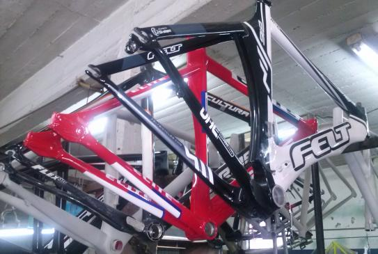

SW Pinturas nace en 1992 abocada a la pintura y reparación integral de
cuadros de bicicleta. Acompañando la constante evolución tanto en la
parte creativa como también en la técnica, la empresa cuenta con
equipamiento de ultima tecnología como plotters, hornos de secado,
cabinas de pintura, máquina computada para la preparación de colores,
maquina de soldadura tig para aluminio, banco de enderezado y
herramientas manuales acordes a las necesidades actuales. Hoy son
varias las marcas y clientes particulares nos confían los trabajos de
pintura y reparación de sus bicicletas de alta gama. No dude en
consultarnos y confiar en SW Pinturas.